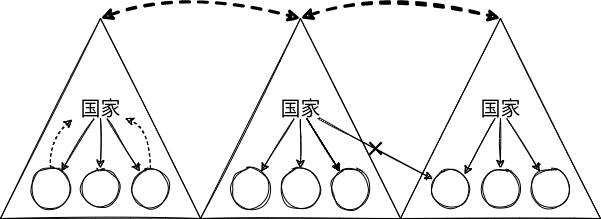

国際社会の特徴
国際公共政策学
はじめに
国際関係や国際問題を理解する上で必要不可欠となる国際社会の基本的な構造について学ぶ。
- 国際社会とはどのような社会なのか？
- 国際社会は国内社会とどのように異なるのか？
課題文献
- 国際社会や国際秩序
- 中西, 石田, と 田所 (2013, 第3章)
- 篠田 (2007)
- 国際連合広報センター「国際連合：その憲章と機構」
1 主権国家体系
現代の国際社会の構造＝主権国家体系 (system of sovereign state)
- 平等な立場の主権国家が並列的に存在
- 主権国家を支配するような中央集権的政治体（e.g., 世界政府）の不在
\(\leadsto\)国際社会＝分権的 (decentralized) 、アナーキー (anarchy)1
1 無政府主義を意味するアナーキズムとは異なることに注意すること。


主権国家 (sovereign state) とは、次のような国家である。
- 内部における排他性・絶対性：他の政治体からの影響を排除して、国内社会を一元的に統治する。
- \(\leadsto\)内政不干渉原則 (principle of non-interference)
- 外部における対等性：他の主権国家と（法的には）対等の関係にある。
- \(\leadsto\)主権平等原則 (principle of sovereign equality)
排他的・絶対的な主権の行使\(\leadsto\)現代の主権国家の特徴 (砂原, 稗田, と 多湖 2020)
- 主権の適用範囲として排他的な領域
- 領域国家 (territorial state)
- 主権を行使するための物理的な強制力（e.g., 軍事力や警察力）の独占
- 領域内の住民が国家の支配に従うに足りる正統性 (legitimacy)
- 正統性の源泉としての国民国家 (nation state) や国民主権
\(\leadsto\)現代の国際社会は、（理念的には）世界中の領域が主権を持った領域・国民国家によって隙間なく埋め尽くされ、並列している分権的社会である。
平和や人権などが侵害されても対抗できない現実を前に、しばしば国家主権が問題視される。
- ロシアがウクライナに侵攻しても、ロシアに処罰を与えることはできない。
- ミャンマーが自国民を弾圧しても、ミャンマーに処罰を与えることはできない。
2 国内的類推
国内的類推 (domestic analogy)：国家＝個人と見立てて、国際社会や国際秩序について考える思考法、視角(中西, 石田, と 田所 2013, 174; 篠田 2007, 39–46)
国内社会における三権（立法、行政、司法）と比較して、国際社会（特に国際連合）を見てみる。

2.1 立法
政治あるいは統治のツールとして、ルールを策定し、社会の構成員はこれに従う。
2.1.1 国内社会
- 国内社会では議会によって立法 (legislation) が行われ、住民はこれに従う。
- \(\leadsto\)当該ルールに同意しない被治者にも法的拘束力
2.1.2 国際社会
- 国家間の条約 (treaty) もしくは慣習国際法 (customary international law) が主な法源である。
裁判所は、付託される紛争を国際法に従って裁判することを任務とし、次のものを適用する。
- 一般又は特別の国際条約で係争国が明らかに認めた規則を確立しているもの
- 法として認められた一般慣行の証拠としての国際慣習
- 文明国が認めた法の一般原則
- 法則決定の補助手段としての裁判上の判決及び諸国の最も優秀な国際法学者の学説。但し、第59条の規定に従うことを条件とする。
- 締約国の自発的な同意に基づいて条約が形成され、法的拘束力が発生する（cf. 契約）。
「条約」とは、国の間において文書の形式により締結され、国際法によつて規律される国際的な合意（単一の文書によるものであるか関連する二以上の文書によるものであるかを問わず、また、名称のいかんを問わない。）をいう。
- 例外：同意に基づかない法的拘束力を有するのは慣習法や安保理決議など
国際社会の議会に近い存在として国際連合 (the United Nations: UN) の総会 (General Assembly)

- 全ての国連加盟国が参加し、あらゆる国際問題について議論する場
- 会期 (session) は毎年9月から始まり、最初に各国代表による一般討論 (genral debate) を行う。
- トピックモデルによる分析結果や日本政府の一般討論を見ることができる。
総会は、すべての国際連合加盟国で構成する。
総会は、この憲章の範囲内にある問題若しくは事項又はこの憲章に規定する機関の権限及び任務に関する問題若しくは事項を討議し、並びに、第12条に規定する場合を除く外、このような問題又は事項について国際連合加盟国若しくは安全保障理事会又はこの両者に対して勧告をすることができる。
2 第1委員会（軍縮・安全保障）、第2委員会（経済・金融）、第3委員会（社会・人権）、第4委員会（特別問題）、第5委員会（行政・予算）、第6委員会（国際法）からなる。
- 総会の各構成国は、1個の投票権を有する。
- （省略）
- その他の問題に関する決定は…出席し且つ投票する構成国の過半数によって行われる。
- ただし、国連は加盟国の内政に干渉する権限はない。
- \(\leadsto\)総会決議 (resolution) には加盟国に対して法的拘束力はない。
この憲章のいかなる規定も、本質上いずれかの国の国内管轄権内にある事項に干渉する権限を国際連合に与えるものではなく、また、その事項をこの憲章に基く解決に付託することを加盟国に要求するものでもない。但し、この原則は、第7章に基く強制措置の適用を妨げるものではない。
安全保障理事会 (Security Council: SC) の決議には法的拘束力がある。
国際連合加盟国は、安全保障理事会の決定をこの憲章に従って受諾し且つ履行することに同意する。
2.2 行政
行政 (administration) によって執行 (enforce) 、実施 (implement)\(\leadsto\)ルールの実現
2.2.1 国内社会
- 政府（を構成する省庁や地方政府）が権限や資源を有している。
- ルールの違反\(\leadsto\)行政による取り締まり\(\leadsto\)司法による修復・処罰
2.2.2 国際社会
- ルールを執行、実施する組織は存在しない。
- 国家が自発的に遵守 (compliance) するか、他国から強制 (coersion) される。
- 国際機関 (international organization) は？
国連には加盟国から（法的には）独立した事務局 (secretary) が存在する。
- 事務局の長として事務総長 (secretary general: SG)

国際連合の主要機関として、総会、安全保障理事会、経済社会理事会、信託統治理事会、国際司法裁判所及び事務局を設ける。
事務局は、1人の事務総長及びこの機構が必要とする職員からなる。事務総長は、安全保障理事会の勧告に基いて総会が任命する。事務総長は、この機構の行政職員の長である。
- 事務局は総会や理事会などの要請に応じつつ、独立して行動する。
- 事務局の活動は年次報告にまとめられている。
- 国際機構は徴税権がない\(\leadsto\)加盟国の分担金あるいは市場から予算調達
- 札幌市や北海道と比べて少ない？ 多い？
- 総会は、この機構の予算を審議し、且つ、承認する。
- この機構の経費は、総会によって割り当てられるところに従って、加盟国が負担する。
- （省略）
- 国連分担金の滞納\(\leadsto\)総会における投票権の制限の可能性
- しかし、支払いの遅延や未納はある（なぜ？）。
この機構に対する分担金の支払が延滞している国際連合加盟国は、その延滞金の額がその時までの満2年間にその国から支払われるべきであった分担金の額に等しいか又はこれをこえるときは、総会で投票権を有しない。但し、総会は、支払の不履行がこのような加盟国にとってやむを得ない事情によると認めるときは、その加盟国に投票を許すことができる。
2.3 司法
ルールが実現されない場合、違反がある場合は司法 (justice) によって違反の判断がなされ、修復・処罰される。
2.3.1 国内社会
裁判所が強制的な管轄権 (jurisdiction) を持っており、判決は行政によって強制される。
- 一方の当事者の訴えによって裁判は行われる。
- 刑事事件の場合は刑罰が課され、民事事件の場合は（場合によっては）強制執行される。
2.3.2 国際社会
しばしば、条約には紛争解決 (dispute settlement) の制度が付属している。
国際連合には国際司法裁判所 (International Court of Justice: ICJ) がある。

国際連合の主要機関として、総会、安全保障理事会、経済社会理事会、信託統治理事会、国際司法裁判所及び事務局を設ける。
国際司法裁判所は、国際連合の主要な司法機関である。この裁判所は、付属の規程に従って任務を行う。この規定は、常設国際司法裁判所規程を基礎とし、且つ、この憲章と不可分の一体をなす。
- しかし、多くの場合、当事国が同意をしなければ裁判は行われない。
裁判所の管轄は、当事者が裁判所に付託するすべての事件及び国際連合憲章又は現行諸条約に特に規定するすべての事項に及ぶ。
- 選択条項受諾宣言（強制管轄権受諾宣言）を行っている場合は、同意によらず裁判は行われる。
この規程の当事国である国は、次の事項に関するすべての法律的紛争についての裁判所の管轄を同一の義務を受諾する他の国に対する関係において当然に且つ特別の合意なしに義務的であると認めることを、いつでも宣言することができる。
3 宣言の範囲を制限するなどの留保 (reservation) を行うこともできる。
「留保」とは、国が、条約の特定の規定の自国への適用上その法的効果を排除し又は変更することを意図して、条約への署名、条約の批准、受諾若しくは承認又は条約への加入の際に単独に行う声明（用いられる文言及び名称のいかんを問わない。）をいう。
- 国際裁判の判決には当事者間において法的拘束力がある／判決の履行を強制できない。
裁判所の裁判は、当事者間において且つその特定の事件に関してのみ拘束力を有する。
各国際連合加盟国は、自国が当事者であるいかなる事件においても、国際司法裁判所の裁判に従うことを約束する。
- ICJは総会などの要請\(\leadsto\)勧告的意見 (advisory opinion)
総会又は安全保障理事会は、いかなる法律問題についても勧告的意見を与えるように国際司法裁判所に要請することができる。
3 アナーキーな社会
国際社会におけるルール\(\neq\)国内社会におけるルール
| 国内社会 | 国際社会 | |
|---|---|---|
| 立法 | 国会による制定 | 自発的な同意\(\approx\)条約 |
| 行政 | 政府による徴税、執行 | 自発的な遵守 or 他国による強制 |
| 司法 | 強制的な管轄権 | 管轄権への自発的同意 |
\(\leadsto\)ルールの制定、遵守、裁判のすべてが主権国家による同意に基づく。
- 主権国家の上位には（定義上）何者も存在しないので、国家に対してなにも強制できない。
アナーキー＝世界政府の不在\(\leadsto\)国際社会が安定しない（国際問題が解決できない）？